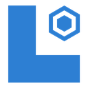

Read what matters
Repository-aware search returns matching fragments with source locations.

Local AI ToolkitOPEN SOURCE · WINDOWS · MCP
Search a repository by meaning. Let local models inspect files and logs. Bring concise evidence back to your agent.
MIT licensed. Shared broker. Explicit repository setup. No savings guarantee.
Repository-aware search returns matching fragments with source locations.
Clients use one broker and queue, with explicit residency and priority policies.
Token comparisons say unknown when the necessary alternative context is not known.
INSIDE THE TOOLKIT
Three views of one system. Select a stage to see its purpose and boundary.
Conceptual stages, not live status. The signing view includes a planned SignPath step.
Read the full architecture →UNDERSTAND THE ESTIMATE
Compare against the context necessary for the request, not the combined size of every file opened locally.
Read the methodology →Illustrative only. All calculations stay in this page. No model call, analytics or account data.
THE HANDBOOK
Start with a supported workflow, then go deeper.
Requirements, installer choices and the first repository.
↗ 02CLI commands, index status and practical checks.
↗ 03What stays local, what clients receive, and release verification.
↗ 04Project boundaries, governance, support and contribution guides.
↗FAQ
No. The calling client receives results and selected excerpts; a cloud agent may forward them to its provider. See the privacy policy for the exact boundary.
No. If the source is already in context, or the request and result cost more than the necessary alternative, delegation may add overhead. Missing evidence means an unknown estimate.
Do not assume that. Current distribution uses an ECDSA-signed manifest. SignPath onboarding and a verified CI signing path must be completed before claiming an Authenticode-signed release.
Yes. They share the broker and model queue. Check status and coordinate long operations; do not stop the shared runtime or unload another session's model to troubleshoot your own project.